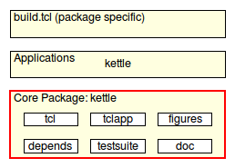

kettle_dsl - Kettle - Build Declarations
Welcome to Kettle, a set of packages providing support for writing build code for Tcl packages.
Please read the document Kettle - Introduction to Kettle, if you have not done so already, to get an overview of the whole system.
Here we document the build (declaration) commands available to a user of kettle, i.e. a package developer using (or wishing to use) kettle as the build system for their code.
These commands are provided by the kettle core, as shown in the archtectural diagram below.

This command declares the presence of one or more Tcl packages in the package source directory.
The package source directory is scanned to locate them. Packages are detected by finding a marker (Tcl command) of the form
package provide NAME VERSION
in a file, where both NAME and VERSION must be literal strings, not commands, nor variable references. It is best recognized when found alone on its line. Note that files containing an anti-marker of the form
package require critcl
are rejected as Tcl packages. Use the command kettle critcl3 to detect such packages, mixing Tcl and C. In each accepted package file the command further looks for and recognizes embedded pragmas of the form
# @owns: PATH
which provides kettle with information about files belonging to the same package without directly providing it. This can be data files, or other Tcl files sourced by the main package file.
For each detected package P two recipes are defined, to install and uninstall this package, namely:
The command further extends the recipes
generating a recipe tree matching
install
-> install-packages
-> install-tcl-packages
-> install-app-$path
uninstall
-> uninstall-packages
-> uninstall-tcl-packages
-> uninstall-app-$path
The extended recipes may be created by this process. As other declarations create similar trees these get merged together, enabling a user to install parts of the sources at various levels of specifity, from just a specific package up to all and sundry.
Tcl packages are installed into the directory specified by option --lib-dir despite technically not being binary files.
To simplify usage the command heuristically detects documentation and testsuites by means of internally calling the commands kettle doc and kettle testsuite with default path arguments ("doc" and "tests" respectively).
If documentation and/or testsuite are placed in non-standard locations these commands have to be run before kettle tcl, with the proper paths.
If dependencies have been specified, via kettle depends-on, the package specific install and debug recipes will recusively invoke install or debug on them before building the package itself.
This command declares the presence of a Tcl script application found at the path under the package source directory.
If the specified application is found the command will define two recipes to install and uninstall this application, namely:
It will further extend the recipes
generating a recipe tree matching
install
-> install-applications
-> install-tcl-applications
-> install-app-$path
uninstall
-> uninstall-applications
-> uninstall-tcl-applications
-> uninstall-app-$path
The extended recipes may be created by this process. As other declarations create similar trees these get merged together, enabling a user to install parts of the sources at various levels of specifity, from just a specific application up to all and sundry.
Script applications are installed into the directory specified by option --bin-dir despite technically not being binary files.
This command declares the presence of one or more critcl-based Tcl packages in the package source directory, mixing C and Tcl.
The package source directory is scanned to locate them. Packages are detected by finding two markers (Tcl commands) in the file. These markers are of the form
package provide NAME VERSION
and
package require critcl
Both NAME and VERSION must be literal strings, not commands, nor variable references. They are best recognized when found alone on their respective lines.
For each detected package P three recipes are defined, to install and uninstall this package. Installation comes in two variants, regular and debug:
The command further extends the recipes
generating a recipe tree matching
install
-> install-packages
-> install-binary-packages
-> install-app-$path
debug
-> debug-packages
-> debug-binary-packages
-> debug-app-$path
uninstall
-> uninstall-packages
-> uninstall-binary-packages
-> uninstall-app-$path
The extended recipes may be created by this process. As other declarations create similar trees these get merged together, enabling a user to install parts of the sources at various levels of specifity, from just a specific package up to all and sundry.
Critcl-based packages are installed into the directory specified by option --lib-dir. Critcl's choice of the target configuration to build for can be overrriden via option --target. Kettle's choice of which critcl application to use cane overriden by option --with-critcl3, except if kettle found a critcl package and runs everything itself instead of invoking critcl child processes.
To simplify usage the command heuristically detects documentation and testsuites by means of internally calling the commands kettle doc and kettle testsuite with default path arguments ("doc" and "tests" respectively).
If documentation and/or testsuite are placed in non-standard locations these commands have to be run before kettle critcl3, with the proper paths.
If dependencies have been specified, via kettle depends-on, the package specific install and debug recipes will recusively invoke install or debug on them before building the package itself.
This command declares that the current sources depend on the packages in the specified directories. These are best specified as relative directories and most useful in package bundles where multiple dependent packages are managed in a single source repository.
The arguments can be paths to files too. In that case the files are assumed to be the build declaration files of the required packages in question. In case of a directory path kettle will search for the build declaration file it needs. This information is currently only used by the package-specific "install" and "debug" recipes generated by the kettle commands kettle tcl and kettle critcl.
The "doc" recipe generated by the kettle doc command (see below) saves the conversion results into the sub-directory specified by option --with-doc-destination.
This command declares that the results should be put into the specified non-standard path instead of the default of "embedded". To take effect it has to be run before kettle doc is run. Note that the user is still able to override with by setting --with-doc-destination on the command line.
This command declares the presence of doctools-based documentation files under the directory docroot, which is a path relative to the source directory.
If not specified docroot defaults to "doc".
While this command can be invoked multiple times, only the first invokation will have an effect. Every invokation after that is ignored. The commands kettle tcl, kettle critcl3, and kettle gh-pages run this command implicitly, with the default paths. This means that if documentation is stored in a non-standard location kettle doc must be run explicitly before them, with the proper path.
The package documentation directory is scanned to locate the documentation files. They are recognized by containing any of the marker strings
"[manpage_begin"
"--- doctools ---"
"tcl.tk//DSL doctools//EN//"
in their first 1024 characters. Possible documentation files are rejected should they contain any of the anti-markers
"--- !doctools ---"
"!tcl.tk//DSL doctools//EN//"
in their first 1024 characters. This last is necessary as doctools include file feature allows the actual document content to start in an include file which cannot operate without being includes from a master file configuring it.
When documentation files are found the command will define recipes to convert the documentation into manpages and HTML files, plus recipes install the conversion results. The conversion results themselves are stored as specified by kettle doc-destination (see above) and associated options.
The command further extends the recipes
generating a recipe tree matching
install
-> install-doc
-> install-doc-html
-> install-doc-manpages
uninstall
-> uninstall-doc
-> uninstall-doc-html
-> uninstall-doc-manpages
The extended recipes may be created by this process. As other declarations create similar trees these get merged together, enabling a user to install parts of the sources at various levels of specifity, from just a specific type of documentation up to all and sundry.
HTML documentation is stored under the directory specified by option --html-dir. Manpages are stored under the directory specified by option --man-dir. The "doc" recipe uses the dtplite application to perform the various conversions.
To simplify usage the command heuristically detects tklib/diagram based figures by means of internally calling the command kettle figures with default path arguments ("doc-sources/figures}".
If the figures are placed in a non-standard location this command has to be run before kettle doc, with the proper paths.
This command declares the presence of diagram-based figures under the directory figroot, which is a path relative to the source directory.
If not specified figroot defaults to "doc/figures".
While this command can be invoked multiple times, only the first invokation will have an effect. Every invokation after that is ignored. The command kettle doc (and indirectly kettle tcl and kettle critcl3) runs this command implicitly, with the default paths. This means that if diagrams are stored in a non-standard location kettle figures must be run explicitly before them, with the proper path.
The package diagram directory is scanned to locate the diagram files. They are recognized by containing the marker string
"tcl.tk//DSL diagram//EN//"
in their first 1024 characters.
When diagram files are found the command will define recipes to convert the diagrams into PNG raster images (saved as siblings to their source files), and to render the diagrams on a Tk canvas.
The recipes use the dia application (of tklib) to perform the conversions, and GUI rendering.
This command declares the presence of a gh-pages branch in the repository, as is used by, for example, http://github.com, to manage the web-site for a project in the rpeository of the project.
The command confirms the presence of documentation and that the local repository is git-based. If neither is true nothing done.
While this command can be invoked multiple times, only the first invokation will have an effect. Every invokation after that is ignored. It runs the command kettle doc command implicitly, with the default paths, to ensure that its own check for documentation work properly. This means that if documentation is stored in a non-standard location kettle doc must be run explicitly before this command, with the proper path.
When the above tests pass the command will define a recipe named gh-pages, which performs all the automatable steps to copy the embedded documentation of the project into its gh-pages branch. Afterward the checkout is left at the gh-pages branch, for the user to review and commit. While the last step could be automated the review cannot, making the point moot.
This command declares the presence of a tcltest-based testsuite under the directory testroot, which is a path relative to the source directory.
If not specified testroot defaults to "tests".
While this command can be invoked multiple times, only the first invokation will have an effect. Every invokation after that is ignored. The commands kettle tcl and kettle critcl3) run this command implicitly, with the default paths. This means that if a testsuite is stored in a non-standard location kettle testsuite must be run explicitly before them, with the proper path.
The package testsuite directory is scanned to locate the test files. They are recognized by containing the marker string
"tcl.tk//DSL tcltest//EN//"
in their first 1024 characters.
When testsuites are found the command will define a recipe to run them. This recipe will recursively invoke the recipes "debug" (or "install" if the former does not exist, or fails) before performing the tests, installing the package under test (and its dependencies) in a local directory for use by the testsuites. The supporting commands provided by kettle (see Kettle - Testsuite Support) know how to use this.
The verbosity of testsuite output to the terminal is specified by the option --log-mode. The ability to save testsuite output to a series of files is specified by the option --log. The tclsh shell used for running the testsuites is specified by option --with-shell.
This package, written by Andreas Kupries, is BSD licensed.
This document, and the package it describes, will undoubtedly contain bugs and other problems. Please report such at the Kettle Tracker. Please also report any ideas for enhancements you may have for either package and/or documentation.
Build support